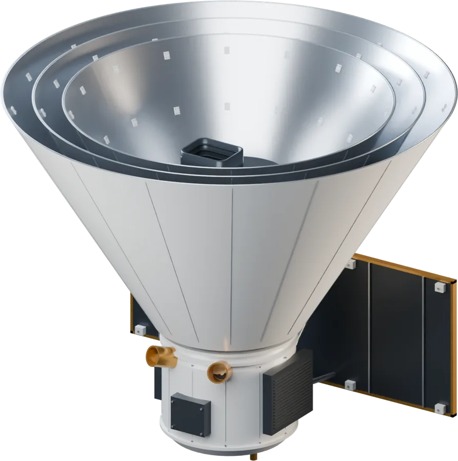
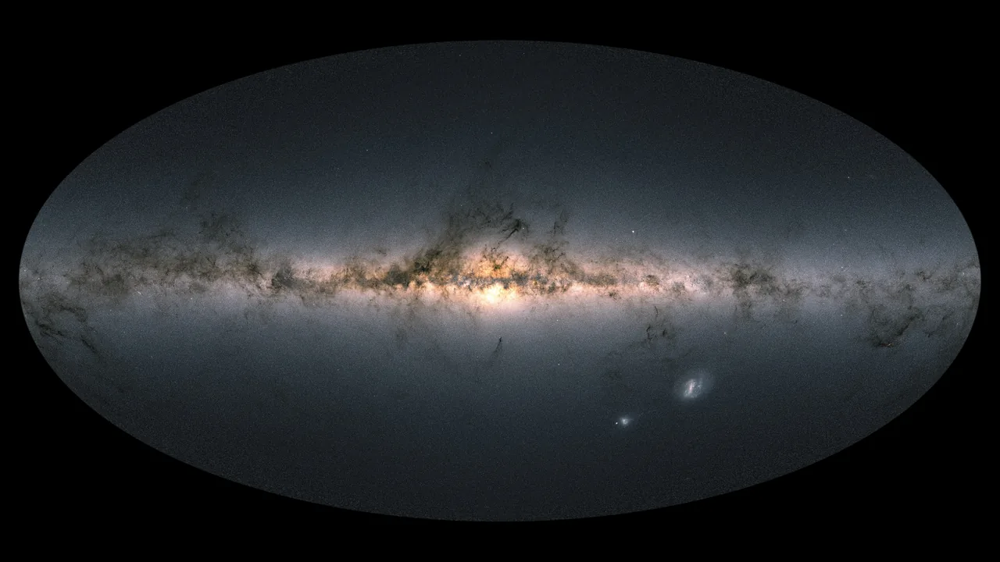

하늘 전체를 찍는
분광 망원경.
2025년 3월 11일 발사됐어요. 고도 약 700 km에서 지구의 남북 극 위를 지나며 돌고, 하늘을 띠처럼 훑어 6개월마다 하늘 전체를 한 번씩 찍어요.
- 2025.3.11
- 발사
- 약 700 km
- 궤도 높이
- 6개월
- 하늘 전체 1회
SPHEREx는 하늘 전체를 102가지 색으로 찍는 NASA의 적외선 우주망원경입니다. 반년에 한 번, 빠짐없이.
2025년 3월 11일 발사됐어요. 고도 약 700 km에서 지구의 남북 극 위를 지나며 돌고, 하늘을 띠처럼 훑어 6개월마다 하늘 전체를 한 번씩 찍어요.
원뿔 모양 차폐막 세 겹이 태양과 지구의 열을 막아요. 그 안의 지름 20 cm 망원경은 냉각 장치 없이 영하 210 °C 안팎까지 식어, 아주 희미한 적외선까지 모아요.
끌어서 돌리고, 차폐막을 열어 안을 들여다보세요. 크게 보기를 누르면 화면 가득 자유롭게 움직일 수 있어요.
공개 자료를 바탕으로 다시 만든 참고 모형이에요. NASA가 제공한 비행용 설계 모델은 아니에요.

3D 모형을 준비하고 있어요
끌어서 돌리기 · ⌘ 또는 Ctrl + 스크롤로 확대끌어서 돌리기 · 스크롤 확대 · 오른쪽 버튼으로 이동 · Esc 닫기
색마다 천체가 얼마나 밝은지 이어 그리면 스펙트럼이 돼요. 스펙트럼의 모양으로 은하까지의 거리와, 얼음이나 먼지 같은 성분을 읽어요.


가시광: ESA/Gaia/DPAC, Gaia EDR3 하늘 색 지도(CC BY-SA 3.0 IGO). SPHEREx 지도와 겹치도록 해머-에이토프 투영을 몰바이데 투영으로 바꿨고, 바꾼 이미지도 같은 조건으로 공개해요. 적외선: NASA/JPL-Caltech, SPHEREx 전천 지도(2025). 두 지도 모두 은하 좌표이며 가운데가 우리은하 중심이에요.
모두를 위한 SPHEREx는 이 자료를 누구나 읽을 수 있게 만든 앱이에요. 먼저 기초를 배우고, 하늘에서 천체를 찾고, 실제 관측에서 달라진 것을 직접 확인해요.
관측값과 모델의 추정값을 구분하고, 출처와 품질 표시를 함께 확인해요.
유명 과학자들이 별의 밝기, 거리, 빛의 색을 차근차근 알려 줘요.
별자리 사이에서 천체를 찾고, 거리와 등급 같은 기본 정보를 봐요.
같은 천체를 날짜별로 깜빡여 비교하고, 3D와 스펙트럼으로 변화를 확인해요.
찾은 변화를 근거와 함께 남겨요. 모든 발견은 확인이 필요한 후보로 다뤄요.
관측 자료: NASA/IPAC IRSA SPHEREx DR1·QR3 · 배경: NASA/JPL-Caltech SPHEREx 전천 지도 ·